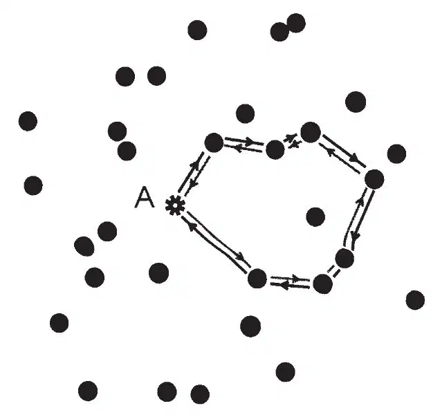
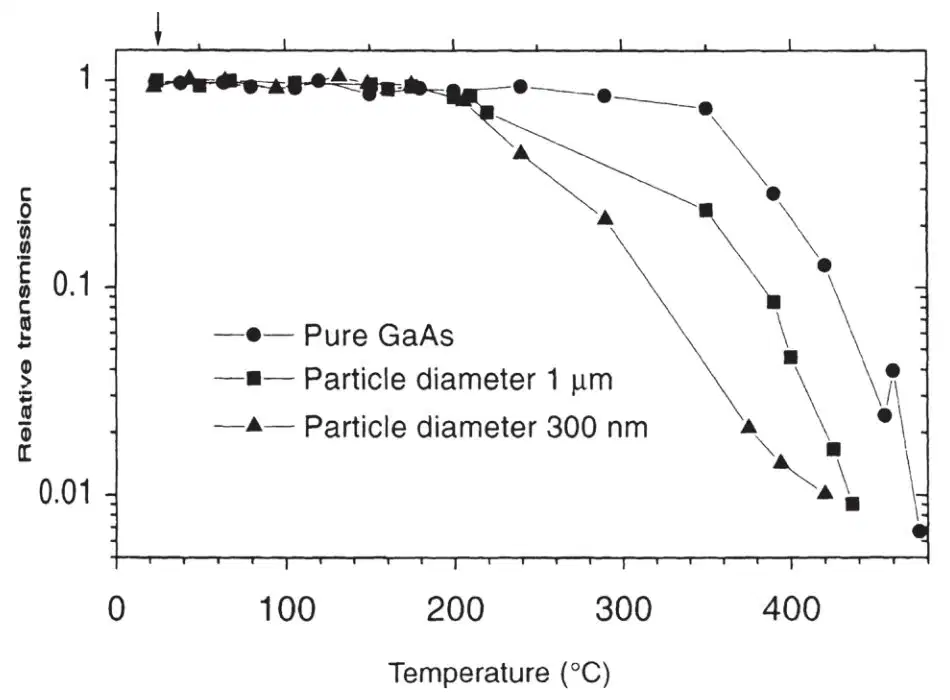
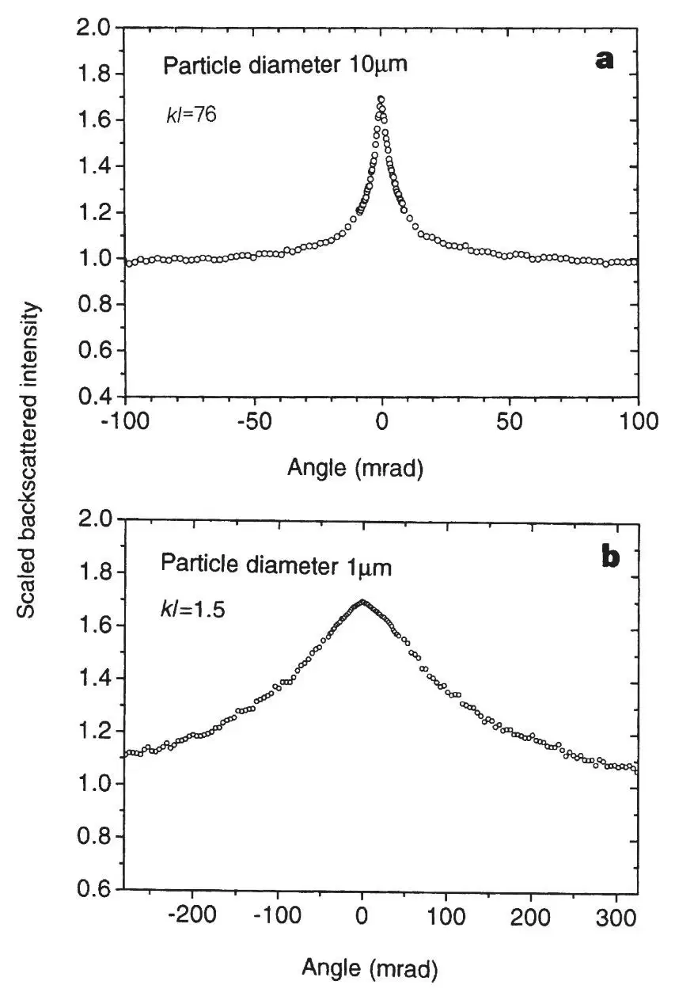
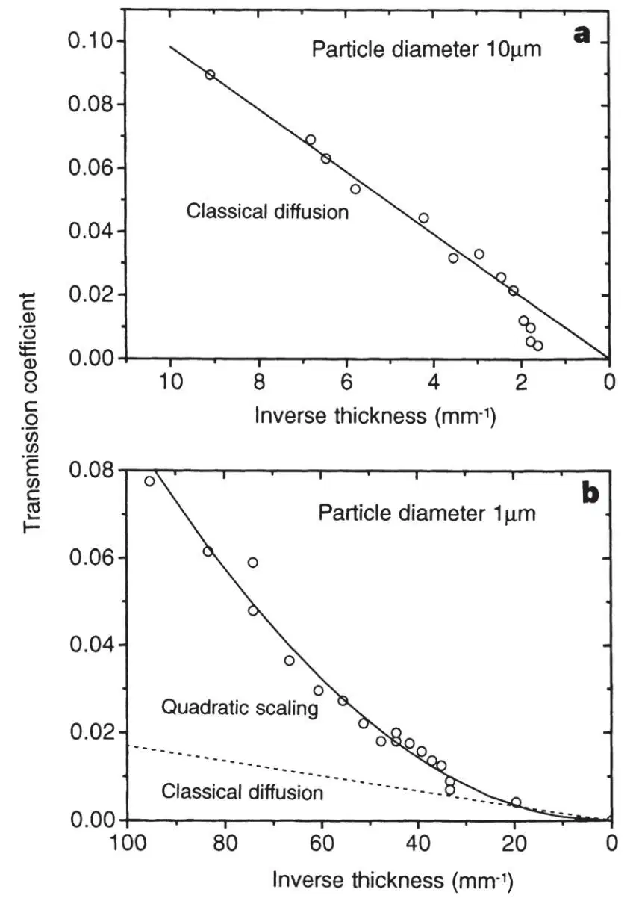
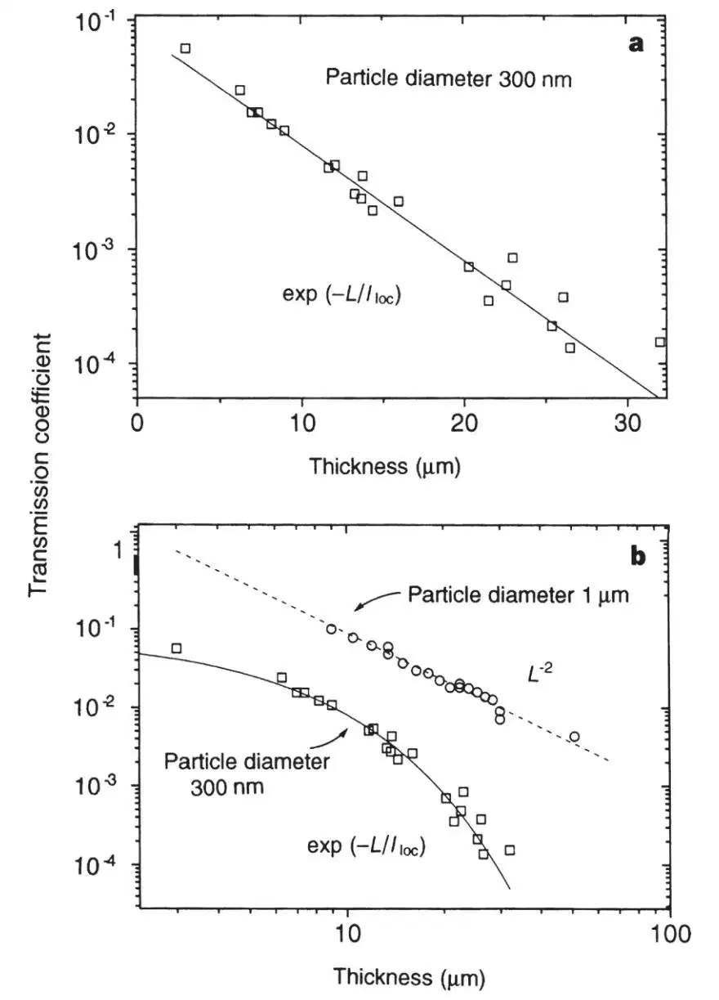

中文
中文D. Wiersma et al.
Editor’s Note
Quantum physics implies that particle diffusion inside disordered materials may be inhibited by destructive wave interference, if the disorder is sufficiently pronounced. This phenomenon of strong localization—or “Anderson localization”, as it was originally described by physicist Philip Anderson—affects not only the behaviour of electrons in many solids, but that of photons as well. Here Diederik Wiersma and colleagues provided experimental confirmation of Anderson localization for light in semiconductor powders. They studied light transmission through gallium arsenide in a crystal and in powders with various particle sizes. They found a sharp threshold of particle size at which disorder-induced localization ultimately blocks light transmission, causing the transmission coefficient through a sample to decrease exponentially with sample thickness rather than linearly. 中文
Among the unusual transport properties predicted for disordered materials is the Anderson localization1 phenomenon. This is a disorder-induced phase transition in the electron-transport behaviour from the classical diffusion regime, in which the well-known Ohm’s law holds, to a localized state in which the material behaves as an insulator. The effect finds its origin in the interference of electrons that have undergone multiple scattering by defects in the solid2-10. A similar phenomenon is anticipated for multiple scattering of electromagnetic waves, but with one important simplification: unlike electrons, photons do not interact with one another. This makes transport of photons in disordered materials an ideal model system in which to study Anderson localization10-17. Here we report direct experimental evidence for Anderson localization of light in optical experiments performed on very strongly scattering semiconductor powders. 中文
MULTIPLE scattering of light is a common phenomenon in daily life, occurring for example in sugar, fog, white paint and clouds. The propagation of light in these media can in general be described by a normal diffusion process. For diffusion of light through a disordered material the same Ohm’s law holds as for diffusion of electrons through any common resistor: the transmission, or conductance, decreases linearly with the system length (thickness). 中文
Anderson localization brings classical diffusion to a complete halt. That is, on increasing the amount of scattering beyond a critical value, the material makes a transition into a localized state (see Fig. 1). This transition can best be observed in the transmission properties of the system. In the localized state, the transmission coefficient decreases exponentially instead of linearly with the thickness of a sample. At the transition, the transmission coefficient is expected to have a power-law dependence on the inverse thickness, which is probably quadratic12,18. 中文

Fig. 1. Anderson localization of waves in disordered systems originates from interference in multiple elastic scattering. Here we consider a light source (like an excited atom emitting a photon) in a disordered medium at position A. The light source is denoted by a star symbol and the spheres denote the scattering elements. A random light path that returns to the light source can be followed in two opposite directions. The two waves which propagate in opposite directions along this loop will acquire the same phase and therefore interfere constructively in A. This leads to a higher probability of the wave coming back to A and consequently a lower probability of propagating away from A. On decreasing the mean free path l, the probability for such looped paths increases and at strong enough scattering the system makes a phase transition from the normal conducting state into a localized state, due to interference. In the localized regime, the system behaves as a non-absorbing insulator. Light which is incident on, for example, a slab would be almost completely reflected and the remaining transmission would decrease exponentially with the slab thickness. 中文
The main difficulty in the search for localization of light has been the realization of strong enough scattering. The appropriate measure for the amount of scattering is the mean free path l for the light in the medium, times the magnitude of the wavevector k. Localization is expected for kl≤1 (ref. 19), which is known as the (modified) Ioffe–Regel criterion. This criterion can be understood intuitively if one realizes that below kl=1, the electric field can not even perform one oscillation before the wave is scattered again. So far, localization effects have been reported only for microwaves in a two-dimensional system of rods20 and for microwaves in a confined geometry (a copper tube filled with metallic and dielectric spheres)21,22. In the latter experiment the absorption was very large, which makes the interpretation of the data complicated. The disadvantage of experiments with microwaves compared to light waves is that it is difficult to avoid absorption. 中文
We have been able to realize very strongly scattering samples for light waves, using semiconductor powders. Semiconductors can have a very large refractive index, while, for wavelengths in the bandgap, the absorption is extremely small. We used light at wavelength λ=1,064 nm, at which the absorption coefficient  of pure GaAs is ≪1 cm－1 and the refractive index is 3.48. Our samples consist of pure (99.999%) gallium arsenide (GaAs) crystals which were ground (as a suspension in methanol) by hand in a ceramic mortar and in a planetary micromill at low speed. By varying the grinding time, we obtained samples with different average particle sizes and thereby different amounts of scattering. In grinding semiconductors one has to be careful not to introduce absorption at the wavelength at which the experiments are performed. For a powder, surface states could become more important and the grinding process (even if performed with little force) could introduce strain or lattice deformations. Surface states, strain and lattice deformations can lead to absorption tails at the edge of the bandgap. We have characterized the change of the band edge of our material by measuring the temperature dependence of the transmission (Fig. 2). 中文
of pure GaAs is ≪1 cm－1 and the refractive index is 3.48. Our samples consist of pure (99.999%) gallium arsenide (GaAs) crystals which were ground (as a suspension in methanol) by hand in a ceramic mortar and in a planetary micromill at low speed. By varying the grinding time, we obtained samples with different average particle sizes and thereby different amounts of scattering. In grinding semiconductors one has to be careful not to introduce absorption at the wavelength at which the experiments are performed. For a powder, surface states could become more important and the grinding process (even if performed with little force) could introduce strain or lattice deformations. Surface states, strain and lattice deformations can lead to absorption tails at the edge of the bandgap. We have characterized the change of the band edge of our material by measuring the temperature dependence of the transmission (Fig. 2). 中文

Fig. 2. Comparison of the temperature dependence of the transmission of pure GaAs crystals and powders. Data obtained using particles of size of 1 μm and 300 nm are shown. The transmission of the powder samples is measured at a thickness where the total transmission equals 1% at room temperature. All curves are scaled to have a maximum of 1. On increasing the temperature T, the bandgap shifts to lower energies Eg(T) corresponding to higher wavelengths λg=1.24/Eg (in μm). The temperature dependence is given by the empirical relation: Eg(T)=Eg(0)-αT2/(T+β), where (for GaAs) Eg(0)=1.522, α=8.871×10－4 and β=572, with T in K. This temperature-dependent shift enables the scanning of the region of the bandgap around the laser wavelength, without changing the laser wavelength itself. For example, a temperature of 200 ℃ corresponds to a wavelength shift of 65 nm. The arrow at top left shows the temperature where we performed all other experiments. We note that the band edge becomes less steep upon grinding the GaAs crystal; this is probably due to the increased importance of surface states and, for example, lattice deformations. But the region close to the laser wavelength remains unabsorbing. 中文
We observe (Fig. 2) that the band edge indeed becomes less steep on grinding, and that the onset of absorption shifts into the bandgap. It is also clear, however, that the region of the absorption tails is still far enough (65 nm) below our laser wavelength as to ensure that these tails will not introduce absorption in our experiments. 中文
To characterize the mean free path l of our samples, we used coherent backscattering. This phenomenon is a general interference effect between counter-propagating waves, which leads to a narrow cone in exact backscattering23. It is seen as the precursor to Anderson localization and is therefore also called “weak localization of light”24,25. The width of the backscattering cone and the angle of its cusp are inversely proportional to l (refs 26, 27) and therefore enable the determination of the amount of scattering inside the samples. Furthermore, the cusp is due to a summation up to (in principle) infinite path length, and is therefore only present in the absence of absorption26-28. In Figure 3, we show backscattering cones for a coarse-grained (Fig. 3a) and a fine-grained (Fig. 3b) powder with an average particle diameter of 10 μm and 1 μm, respectively. From the angle of the cusp we find for the coarse-grained powder l=8.5 μm and hence kl=76. For the fine-grained powder we find l≈0.17 μm which corresponds to kl≈1.5. The observed value of kl=1.5 is four times smaller than the smallest kl values that have been reported so far30 for light waves. The shape of the coherent backscattering cone at the localization transition is interesting from both an experimental and a theoretical point of view, but will be discussed elsewhere. 中文

Fig. 3. Coherent backscattering cones from coarse-grained (a) and fine-grained (b) GaAs powder. The samples are strongly polydisperse with an average particle diameter of 10 μm and 1 μm, respectively. The sample is illuminated with a mode-locked Nd:YAG laser operating at 76 MHz, with a wavelength of 1,064 nm, pulse duration 100 ps, beam diameter 6 mm and incident power 100 mW. In all experiments we have checked that nonlinear absorption processes like two-photon absorption do not play a role; this was done by lowering the incident power to 20 mW, and finding that this reduction did not influence the results. Detection is performed in the polarization-conserving channel. The mean free path is calculated from the angle of the cusp27, taking into account internal reflection29. This yields l=8.5 μm and kl=76 for the data in a, and l=0.17 μm resulting in kl≈1.5 for the data in b. 中文
To observe a possible localization transition, we have measured the transmission coefficient as a function of sample thickness. In Fig. 4a, the transmission coefficient is shown for the coarse-grained powder. We see that the transmission behaves completely classically with l=9.8 μm, which is consistent with the coherent backscattering data. At very large sample thicknesses (L>500 μm), the transmission decreased more rapidly than linear due to the onset of absorption. This gives an upper limit for (defined as  ) for the coarse-grained powder, of ~0.13 cm－1, which shows again that the grinding process did not introduce any absorption. 中文
) for the coarse-grained powder, of ~0.13 cm－1, which shows again that the grinding process did not introduce any absorption. 中文

Fig. 4. Comparison of the transmission coefficients for two GaAs powders with different average particle diameters. Here the transmission coefficient is defined as the ratio between total transmitted flux and the incident flux. The total transmission is measured with an integrating sphere placed in contact with the back of the sample. The light source is as in Fig. 3, with beam diameter 0.5 mm and incident power 20 μW. The data in a correspond to particle a diameter of 10 μm and behave completely classically. The solid line is T=l/L, with l=9.8 μm, which is in agreement with the backscattering data. The data in b correspond to a particle diameter of ~1 μm. The dashed line is the theoretical curve for classical diffusion with l=0.17 μm, as obtained from the backscattering data. The solid line is a quadratic fit to the data. This quadratic dependence of the transmission coefficient on the inverse thickness is the expected behaviour at an Anderson localization transition. 中文
In Fig. 4b, the transmission coefficient T is shown for the fine-grained powder. The dashed line is the theoretical curve for classical diffusion assuming l=0.17 μm as obtained from the backscattering data. Whereas for classical diffusion T would decrease linearly with the sample thickness L, we find for these samples a quadratic dependence (T∝L－2). This is exactly the behaviour predicted by the scaling theory of localization at the localization transition12,18. We note that no classical diffusion process can show a quadratic system-size dependence. 中文
If we decrease the particle size even further we expect (from Mie-scattering theory) to obtain even stronger scattering. In Fig. 5, the transmission coefficient is shown for a powder with an average particle diameter of 300 nm. In Fig. 5b we see that the quadratic behaviour has changed into an exponential decay in this case, as expected in the localized regime. The transport of light has come to a halt owing to interference, and the system has made a phase transition from a conducting into a localized state. The characteristic length scale for the exponential decay is called the localization length, which here is 4.3 μm. 中文

Fig. 5. The transmission coefficient of very fine GaAs powder as a function of thickness. The average particle diameter is 300 nm. In a, the data are plotted on a semi-logarithmic scale. The solid line is an exponential fit exp(-L/lloc) with a localization length of lloc=4.3 μm. In b, the same data are plotted on a double-logarithmic scale and the data of Fig. 4b are imported for comparison. We see that for the very fine powder, the quadratic behaviour changes to an exponential decay. The system goes into a localized state where it behaves as a (non-absorbing) insulator. 中文
Different techniques could be used to map out the complete localization transition. The amount of scattering could be varied by changing the average particle diameter, the refractive index contrast, the particle density and the wavelength of the light. An important experiment would be a time-resolved transmission experiment in which the reduction of the diffusion constant at the Anderson localization transition is observed. Localization of classical waves is, in many ways, similar to Anderson localization of electrons. There are, however, also interesting differences between light and electrons. For experiments with light waves, coherent (laser) sources are available; the wavelength of such sources may be easily adjusted. Furthermore, for electromagnetic waves photon–photon interactions can be neglected, whereas in the case of electrons, electron–electron interactions always play a role. This latter property in particular makes light in strongly disordered media an interesting system in which to study the Anderson localization transition. 中文
(390, 671-673; 1997)
Diederik S. Wiersma*, Paolo Bartolini*, Ad Lagendijk† & Roberto Righini*
* European Laboratory for Non-Linear Spectroscopy, Largo E. Fermi 2, 50125 Florence, Italy
† Van der Waals-Zeeman Laboratory, Valckenierstraat 65-67, 1018 XE Amsterdam, The Netherlands
Received 16 June; accepted 15 October 1997.
References:
1. Anderson, P. W. Absence of diffusion in certain random lattices. Phys. Rev. 109, 1492-1505 (1958).
2. Bergmann, G. Quantitative analysis of weak localization in thin Mg films by electroresistance measurements. Phys. Rev. B 25, 2937-2939 (1982).
3. Altshuler, B. L., Aronov, A. G., Khmel’nitskii, D. E. & Larkin, A. I. in Quantum Theory of Solids (ed. Lifshits, I. M.) 130-237 (MIR, Moskow, 1983).
4. Khmel’nitskii, D. E. Localization and coherent scattering of electrons. Physica B 126, 235-241 (1984).
5. Lee, P. A. & Ramakrishnan, T. V. Disordered electronic systems. Rev. Mod. Phys. 57, 287-337 (1985).
6. Condat, C. A., Kirkpatrick, T. R. & Cohen, S. M. Acoustic localization in one dimension in the presence of a flow field. Phys. Rev. B 35, 4653-4661 (1987).
7. Souillard, B. in Chance and Matter (eds Souletie, J., Vannimenus, J. & Stora, R.) Ch. 5 (North-Holland, Amsterdam, 1987).
8. Ando, T. & Fukuyama, H. (eds) Anderson Localization, Springer Proceedings in Physics Vol. 28 (Springer, Berlin, 1988).
9. Vollhardt, D. & Wölfle, P. in Electronic Phase Transitions (eds Hanke, W. & Kopaev, Yu. V.) 1-78 (Elsevier, Amsterdam, 1992).
10. Sheng, P. Introduction to Wave Scattering, Localization, and Mesoscopic Phenomena (Academic, San Diego, 1995).
11. John, S. Electromagnetic absorption in a disordered medium near a photon mobility edge. Phys. Rev. Lett. 53, 2169-2172 (1984).
12. Anderson, P. W. The question of classical localization: a theory of white paint? Phil. Mag. B 52, 505-509 (1985).
13. Sheng, P. & Zhang, Z.-Q. Scalar-wave localization in a two-component composite. Phys. Rev. Lett. 57, 1879-1882 (1986).
14. Arya, K., Su, Z. B. & Birman, J. L. Anderson localization of electromagnetic waves in a dielectric medium of randomly distributed metal particles. Phys. Rev. Lett. 57, 2725-2728 (1986).
15. Lagendijk, A., van Albada, M. P. & van der Mark, M. B. Localization of light: the quest for the white hole. Physica A 140, 183-190 (1986).
16. Kaveh, M. Localization of photons indisordered systems. Phil. Mag. B 56, 693-703 (1987).
17. Soukoulis, C. M., Economou, E. N., Grest, G. S. & Cohen, M. H. Existence of Anderson localization of classical waves in a random two-component medium. Phys. Rev. Lett. 62, 575-578 (1989).
18. Abrahams, E., Anderson, P. W., Licciardello, D. C. & Ramakrishnan, T. V. Scaling theory of localization: absence of quantum diffusion in two dimensions. Phys. Rev. Lett. 42, 673-676 (1979).
19. Mott, N. F. Metal-Insulator Transitions (Taylor & Francis, London, 1974).
20. Dalichaouch, R., Armstrong, J. P., Schultz, S., Platzman, P. M. & McCall, S. L. Microwave localization by two-dimensional random scattering. Nature 354, 53-55 (1991).
21. Garcia, N. & Genack, A. Z. Anomalous photon diffusion at the threshold of the Anderson localization transition. Phys. Rev. Lett. 66, 1850-1853 (1991).
22. Genack, A. Z. & Garcia, N. Observation of photon localization in a three-dimensional disordered system. Phys. Rev. Lett. 66, 2064-2067 (1991).
23. Kuga, Y. & Ishimaru, J. Retroflection of a dense distribution of spherical particles. J. Opt. Soc. Am. A 1, 831-835 (1984).
24. Albada, M. P. & Lagendijk, A. Observation of weak localization of light in a random medium. Phys. Rev. Lett. 55, 2692-2695 (1985).
25. Wolf, P. E. & Maret, G. Weak localization and coherent backscattering of photons in disordered media. Phys. Rev. Lett. 55, 2696-2699 (1985).
26. Mark, M. B., Albada, M. P. & Lagendijk, A. Light scattering in strongly scattering media: multiple scattering and weak localization. Phys. Rev. B 37, 3575-3592 (1988).
27. Akkermans, E., Wolf, P. E., Maynard, R. & Maret, G. Theoretical study of the coherent backscattering of light by disordered media. J. Phys. (Paris) 49, 77-98 (1988).
28. Edrei, I. & Stephen, M. J. Optical coherent backscattering and transmission in a disordered media near the mobility edge. Phys. Rev. B 42, 110-117 (1990).
29. Zhu, J. X., Pine, D. J. & Weitz, D. A. Internal reflection of diffusive light in random media. Phys. Rev. A 44, 3948-3957 (1991).
30. Wiersma, D. S., Albada, M. P., van Tiggelen, B. A. & Lagendijk, A. Experimental evidence for recurrent multiple scattering events of light in disordered media. Phys. Rev. Lett. 74, 4193-4196 (1995).
Acknowledgements. We thank F. Bogani, M. Colocci, R. Torre and M. Gurioli for discussions, and M. Colocci also for supplying GaAs crystals. D.S.W. thanks M. van Albada for advice and continuous support during the experiments, and M. Brugmans for reading of the manuscript. A.L. was supported by the “Stichting voor Fundamenteel Onderzoek der Materie” (FOM). This work was supported by the Commission of the European Community.
Correspondence and requests for materials should be addressed to D.S.W. (e-mail: wiersma@lens.unifi.it).